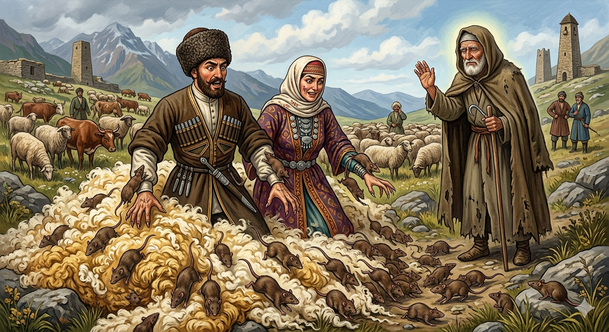

Из ингушского фольклора.

Мишта хьахиннай цицхолгаш
Вахаш хиннав геттар къе саг. ЧӀоагӀа текъаш, Даллагара шийна рузкъа дийхад цо. Къа а хийтта, Даллас боккха боахам бенна хиннаб цунна. ЧӀоагӀа хьал долаш ваха хайнав из. Даллана дагадехад из саг миштав ха. Джабраил-малейк дахийтад цо лаьтта. Цу сага чулатташ цхьа Ӏу хиннав. СагӀадехарг сана цунна тӀадахад Джабраил-малейк. КӀезига-дукха шийна тха дийхад цо, шийна пасаташ ялла. Даьга хаьтта мара тха дала йишяц ший, аьннад. Мегад, аьнна, дӀагаьндаьннад малейк. Цхьа ха йоалаш, ший жега хьажа воагӀаш из вӀаьхий хинна саги цун сесаги бӀаргадайнад цунна. Уж жега эттача, жаӀуно иштта вена сагӀадехарг хиннавар укхаза, иштта тха дехаш а хиннавар, аьнна дӀадийцад. Гаьннара гучаваьннав из сагӀадехарг. Дукха тха хиннад цар. Цу сагӀадехарга иззал кӀезага а хӀама ца ялар духьа, из вӀаьхий саги цун сесаги, хоба а бенна, цу тхана кӀалха лечкъаб. ХьатӀавенача сагӀадехаргага жаӀуно, шийна хьийххача тайпара аьннад, фусамдай хьабахканза а ба, сагӀадехарг дӀаваха мара а везац. ТӀаккха Джабраил-малейка ший ког дӀакхетачох кеп а оттая, ког чоал берзийташ вӀаьхвенна тхана тӀавижав. Лечкъа багӀараш гучабаьннаб. Аьннад Джабраил-малейко: - Къе, биркъа, миска волча хана Ӏа Даллагара дийхача, цо доккхача рузкъан да вир хьох. Бакъда, хьо хиннавоав кхы шийла цӀаьрматагӀа хила йиш йоацачарех. Ши пасат ялла сагӀадехарга тха даланзар Ӏа. Цицхолгаш санна укх тхана кӀалха лечкъар шо. ХӀанзарчул тӀехьагӀа хьай боахамах а ваьннав хьо, шух шиннех хӀанзарчул тӀехьагӀа ши цицхолг а хургья. ЦӀаьрмата хилча хулар да из.
РУССКИЙ
Как появились крысы
Некогда жил один бедняк. Дойдя до крайней нужды, он попросил у Бога хоть чуточку богатства. Бог сжалился над ним и дал ему большое богатство. Зажил он припеваючи. Бог решил проверить, щедр ли тот человек и призвал к себе ангела Джабраила, поручил ему спуститься на землю в облике нищего и попросить подаяния у облагодетельствованного им. Богач нанял всего одного пастуха, который ухаживал за всеми его стадами. Однажды он и его жена пошли в горы проведать свои стада. Тем временем преобразился ангел в нищего, сошел на землю, подошел к пастуху того богача и попросил себе немного шерсти, чтобы сделать чулки. Пастух ответил, что шерсть принадлежит хозяину, и только он может дать ее. Ангел на время отошел. Когда хозяева пришли к стадам, он направился к ним. А пастух уже успел хозяевам рассказать о просьбе нищего. Хозяин, увидев его, вместе с женою залез в шерсть, и скрючившись, притаился в ней. Ангел Джабраил, зная, что муж и жена спрятались под шерстью, сделал вид, что споткнулся и упал на нее. Жадные муж и жена вынуждены были выйти из-под шерсти. Тогда ангел Джабраил сказал: "Когда ты был нищий и несчастный и попросил у Бога благодати себе, он тебе ее дал. Но ты оказался таким скупым, что во имя Бога не смог самую малость пожертвовать нищему. Поэтому Бог лишает тебя тех богатств, которые он тебе дал. С сегодняшнего дня вы станете крысами". Так бывает с жадными людьми.
ENGLISH
НОХЧИЙН
ПОГОВОРКИ